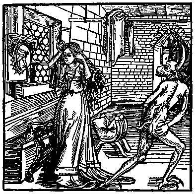
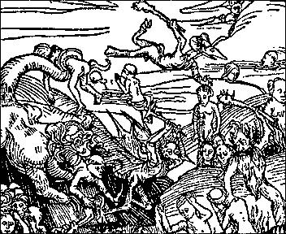

Gode
Cookery Presents

True stories, fables and anecdotes from the
Middle
Ages
 Robert Manning pictured a
man lying abed on Sunday morning and hearing the church bells ring, "to
holy church men calling," and preferring to
... lie and sweat
And take the merry morning sleep; Of matins rich men take no keep. A devil whispers in his ear, urging him to ignore matins: "Betimes you may rise
When they do the Mass sevice. A Mass is enough for you." Vanity sometimes caused women to be late for Mass; like the lady of Eynsham described by a fourteenth-century preacher, "who took so long over adornment of her hair that she barely arrived at church before the end of Mass." One day the devil in the form of a giant spider descended on her coiffure. Nothing would dislodge it, neither prayer, exorcism, nor holy water, until it was confronted with the Eucharist. The spider then decamped, and presumably the lady thenceforth arrived at church on time. 
The demon of Vanity and the coquette. From Geoffrey de Latour Landry's Ritter vom Turn, printed by Michael Furter, Basle, 1493. One
story that must have had a particular appeal to peasant women began, "I
find in the chronicles that there was once a worthy woman who had hated
a poor woman for more than seven years." When the "worthy woman" went
to church on Easter Day, the priest refused to give her communion
unless she forgave her enemy. The woman reluctantly gave lip service to
the act of forgiveness, "for the shame of the world more than for the
awe of God," and so that she could have her communion.
Then, when service was done... the
neighbors came unto this worthy woman's house with presents to cheer
her, and thanked God highly that they were accorded. But then this
wretched woman said, "Do you think I forgave this woman her trespass
with my heart as I did with my mouth? Nay! Then I pray God that I never
take up this rush at my foot." Then she stooped down to take it up, and
the devil strangled her even there. Wherefore ye that make any
love-days [peace agreements] look that they be made without any
feigning, and let the heart and the tongue accord in them.
The priest might compare the agony of a sinner in hell with being rolled a mile in a barrel lined with red-hot nails. Devils were favorite descriptive subjects, with their faces "burned and black." One devil was so horrible that "a man would not for all the world look on him once." Hell rang with the "horrible roaring of devils, and weeping, and gnashing of teeth, and wailing of damned men, crying, 'Woe, woe, woe, how great is this darkness!' " If one of them longed for sweetmeats and drink, he got "no sweetness, nor delicacy, but fire and brimstone... If one of them would give a thousand pounds for one drop of water, he gets none... There shall be flies that bite their flesh, and their clothing shall be worms... and in short, there are all manners of torments in all the five senses, and above all there is the pain of damnation: pain of privation of the bliss of heaven, which is a pain of all pains... Think on these pains; and I trust to God that they shall steer thee to renounce thy drunken living!" Excerpts from: Life in a Medieval Village by Frances & Joseph Gies. New York: HarperCollins Publishers, 1990. 
Demons torturing the Damned. Detail from Warning vor der falschen lieb dieser werlft, printed by Peter Wagner, Nuremberg, 1495. |